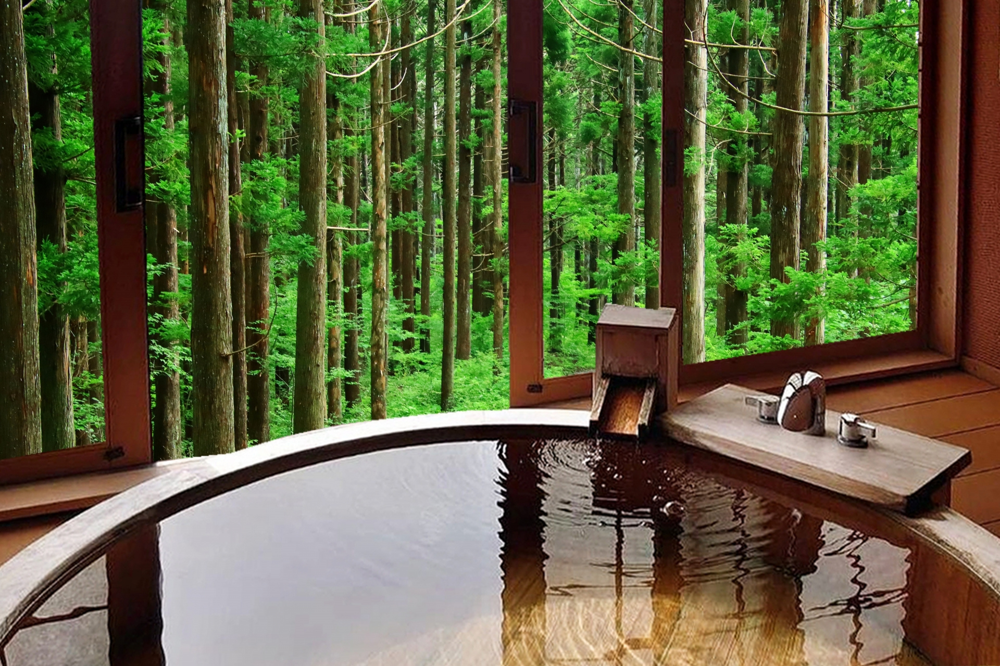

Where you can go?
There are many places where you can enjoy hot springs in Japan. Just go to a Japanese spa and relax for a few hours or stay in a Japanese-style hotel for a night or so. Either way, you can immerse yourself in the amazing Onsen experience and truly enjoy it.
Map of Japanese Onsen
Recommendations
